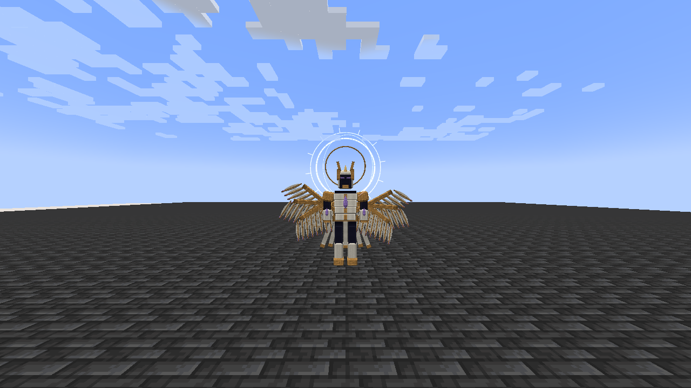

On this page
Discontinued archive: Tensura Myths ended at 0.36.1. No further updates are planned.
Ananke is the first Myth boss. It uses Moira, Thoth, Infinite Regeneration and all native resistance/nullification skills.
Summoning
Craft a Writ of Last Dawn with this shaped recipe:
| End Crystal | Echo Shard | End Crystal |
| Dragon's Breath | Nether Star | Dragon's Breath |
| End Crystal | Echo Shard | End Crystal |
Use it on a lodestone with room for a 1.6-block-wide, 4.1-block-tall entity above it. Prepare at least 32 blocks of clear fighting space around the spawn and more room to retreat. The ritual requires a hostile difficulty and no Ananke within 128 blocks. Failure leaves the writ intact; creative players keep it on success.
Combat
| Form | Begins | Main changes |
|---|---|---|
| Sealed Testament | Initial summon | Fatebreaker, Starfall Canticle, Eventide Procession and melee |
| Unwritten Crown | First fatal defeat regeneration cannot prevent | Faster attacks; eight-star Starfall; Astral Library and Spellbreak |
| Last Dawn | Second fatal defeat regeneration cannot prevent | Fastest decisions; The Last Dawn |
Infinite Regeneration spends magicules to restore HP/SHP before a fatal defeat can trigger the next form. Each form change refills HP, SHP, aura and magicules. Ananke’s valid fighting area extends 72 blocks from his anchor.
Moira’s four attacks, costs, damage types and warnings.
Rewards
A player-attributed kill drops one Dawn Testament and 1–3 Nether Stars. The boss grants 1,500 base experience; the First Myth challenge advancement grants 2,000 experience.
Drink a Dawn Testament for 2.4 seconds to heal 50% maximum HP, restore 50% maximum SHP, and fill aura and magicules to their current native caps. HP healing uses the native heal event; SHP restores directly to its native pool.
Related
Pictures and video
